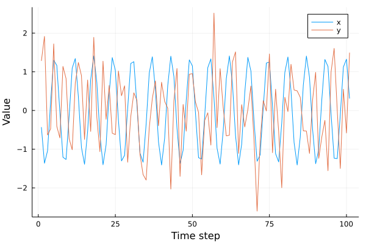
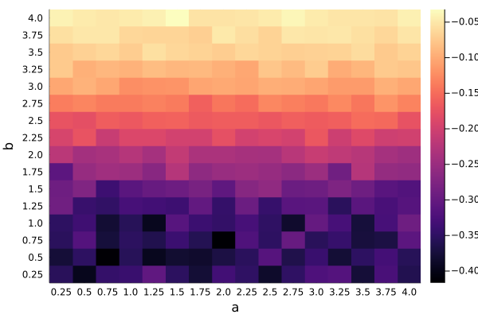

Pairwise asymmetric inference
CausalityTools.CrossMappings.pai — Functionpai(x, y, d, τ; w = 0, correspondence_measure = Statistics.cor) → Float64
pai(x, y, d, τ, bootstrap_method::Symbol; w = 0, correspondence_measure = Statistics.cor,
method = :segment, L = ceil(Int, (length(x)-d*τ)*0.2), nreps = 100) → Vector{Float64}Compute the pairwise asymmetric inference (PAI; McCracken, 2014)[McCracken2014] between x and y. Returns the correspondence between original and cross mapped values (the default is ρ = correspondence_measure(y(t), ỹ(t) | M_xy)).
PAI is a modification to Sugihara et al. (2012)'s CCM algorithm[Sugihara2012], where instead of using completely out-of-sample prediction when trying to predict $y(t)$, values about both variables are included in the embedding used to make predictions. Specifically, PAI computes the correspondence between the values $y(t)$ and the cross-map estimated values $ỹ(t) | M_xy$, where the $\tilde{y}(t)$ are the values estimated using the embedding $M_{xy} = \{ ( x_t, x_{t-\tau}, x_{t-2\tau}, \ldots, x_{t-(d - 1)\tau} ) \}$. *Note: a d+1-dimensional embedding is used, rather than the d-dimensional embedding used for CCM.
Like for the CCM algorithm, the Theiler window r indicates how many temporal neighbors of the predictee is to be excluded during the nearest neighbors search (the default r = 0 excludes only the predictee itself, while r = 2 excludes the point itself plus its two nearest neighbors in time).
If bootstrap_method is specified, then nreps different bootstrapped estimates of correspondence_measure(y(t), ỹ(t) | M_x) are returned. The following bootstrap methods are available:
bootstrap_method = :randomselects training sets of lengthLconsisting of randomly selected points from the embedding $M_x$ (time ordering does not matter). This is method 3 from Luo et al. (2015)[Luo2015], which critiqued the original Sugihara et al. methodology.bootstrap_method = :segmentselects training sets consisting of time-contiguous segments (each of lenghtL) of embedding vectors in $M_x$ (time ordering matters). This is method 2 from Luo et al. (2015)[Luo2015].
Example: nonlinear system
Let's try to reproduce figure 8 in McCracken & Weigel (2014)[McCracken2014]. We'll start by defining the their example B (equations 6-7). This system consists of two variables $X$ and $Y$, where $X$ drives $Y$.
using CausalityTools, DynamicalSystems, Plots, StatsBase, Statistics, Distributions; gr()
function eom_nonlinear_sindriver(dx, x, p, n)
a, b, c, t, Δt = (p...,)
x, y = x[1], x[2]
𝒩 = Normal(0, 1)
dx[1] = sin(t)
dx[2] = a*x * (1 - b*x) + c*rand(𝒩)
p[end-1] += 1 # update t
return
end
function nonlinear_sindriver(;u₀ = rand(2), a = 1.0, b = 1.0, c = 2.0, Δt = 1)
DiscreteDynamicalSystem(eom_nonlinear_sindriver, u₀, [a, b, c, 0, Δt])
end
# Create a system of nonidentical logistic maps where coupling from variable x to variable y
# is stronger than vice versa.
sys = nonlinear_sindriver(a = 1.0, b = 1.0, c = 2.0)
npts = 100
orbit = trajectory(sys, npts, Ttr = 10000)
x, y = columns(orbit);
plot(xlabel = "Time step", ylabel = "Value")
# Standardize and plot data
plot!((x .- mean(x)) ./ std(x), label = "x")
plot!((y .- mean(y)) ./ std(y), label = "y")
Now, let's generate such time series for many different values of the parameters a and b, and compute PAI for fixed p = 2.0. This will replicate the upper right panel of figure 8 in the original paper.
as = 0.25:0.25:4.0
bs = 0.25:0.25:4.0
pai_xys = zeros(length(as), length(bs))
pai_yxs = zeros(length(as), length(bs))
c = 2.0
npts = 2000
d, τ = 2, 1
for (i, a) in enumerate(as)
for (j, b) in enumerate(bs)
s = nonlinear_sindriver(a = a, b = a, c = c)
X, Y = columns(trajectory(s, npts, Ttr = 10000))
# Use the segment bootstrap estimator, take the mean of 50 reps over segments of length L = 200
pai_xys[i, j] = pai(X, Y, d, τ, :segment, L = 200, nreps = 50) |> mean
pai_yxs[i, j] = pai(Y, X, d, τ, :segment, L = 200, nreps = 50) |> mean
end
endNow that we have computed the PAI in both directions, we define a measure of directionality as the difference between PAI in the $X \to Y$ direction and in the $Y \to X$ direction, so that if $X$ drives $Y$, then $\Delta < 0$.
Δ = pai_xys .- pai_yxs
clr = cgrad(:magma, categorical = true)
plot(xlabel = "a", ylabel = "b")
yticks!((1:length(as), string.(as)))
xticks!((1:length(bs), string.(bs)))
heatmap!(Δ, c = clr, logscale = true)
As expected, $\Delta < 0$ for all parameter combinations, implying that $X$ "PAI drives" $Y$.
- McCracken2014McCracken, James M., and Robert S. Weigel. "Convergent cross-mapping and pairwise asymmetric inference." Physical Review E 90.6 (2014): 062903.
- Sugihara2012Sugihara, George, et al. "Detecting causality in complex ecosystems." Science (2012): 1227079.http://science.sciencemag.org/content/early/2012/09/19/science.1227079
- Luo2015"Questionable causality: Cosmic rays to temperature." Proceedings of the National Academy of Sciences Aug 2015, 112 (34) E4638-E4639; DOI: 10.1073/pnas.1510571112 Ming Luo, Holger Kantz, Ngar-Cheung Lau, Wenwen Huang, Yu Zhou